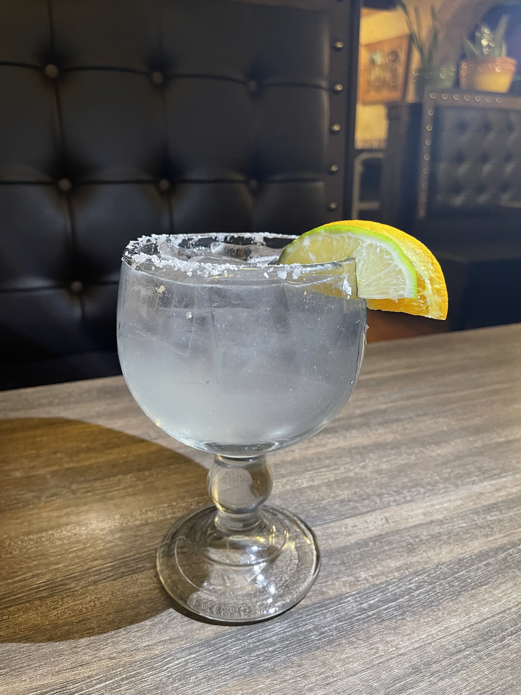
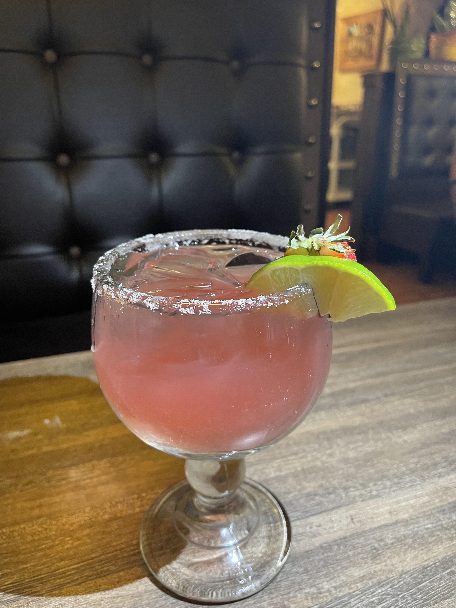
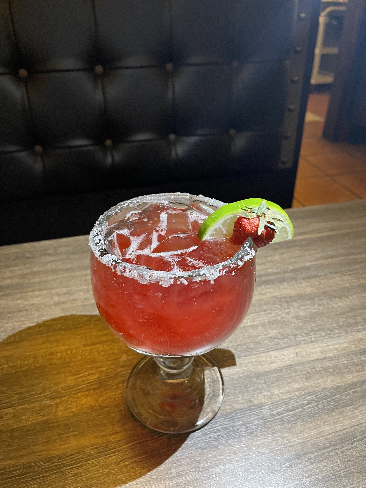
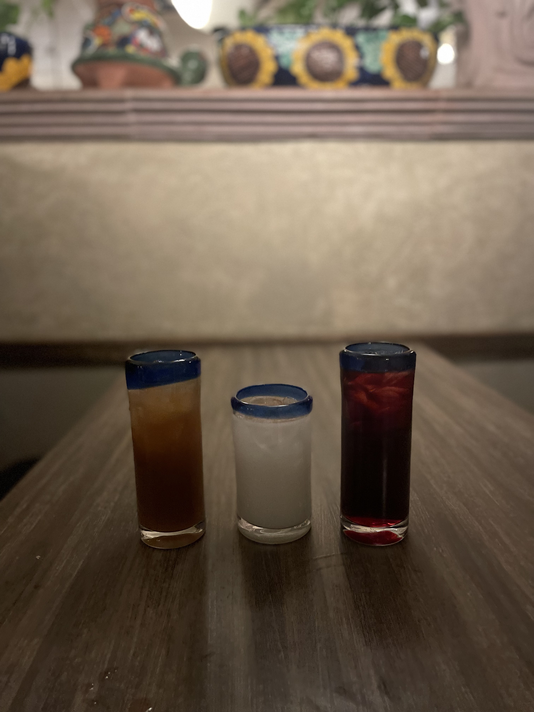

We have many types of margaritas because this is a Mexican restaurant and I like other Mexicans love Tequila! The first popular drink is the Skinny Margarita. The Skinny Margarita is definetely a margarita that has no sour mix or fake lime juice. It consists of tequila, triple sec, agave, fresh lime, and soda water. I made this margarita with a salt rim but you can do different rims like sugar or tajin. Tajin is like spicy chilli powder. It is salty but spicy and it is very good! I love it but it gives me acid reflex. The Skinny Margarita is one of our strongest drinks because we do not pour accurately. We try to pour good but sometimes we just know how to make good drinks. This drink is $14.
The next margarita is called the Prosecco Strawberry. This margarita consists of tequila, gran gala and triple sec which are liquerurs. Then, we add strawberry puree, agave, and Rose's lime juice which is "fake lime juice" but it is really good. We are supposed to add sour mix but who likes sour mix? I like this margarita but if you have about like 3 of them, you will end up stumbling because it is tequila and champagne mixed together. The prosecco is a floater on the top and good sometimes by itself. This drink is $15 and also can be rimmed with sugar, salt, or tajin.
This drink is another one of my favorites. My coworkers like when I make this drink because I make it a certain way. The way it is supposed to be made is with tequila, triple sec, gran gala, Rose's lime juice, cranberry juice, Chambord is another liqueur that is raspberry flavored. This can also be rimmed with salt, sugar, or tajin. The way I make it is tequila, gran gala, triple sec, frsh lime, strawberry puree, and cranberry juice. When I make it, it tastes like a Cherry flavored Jolly Rancher. This drink is $14 as well.
We also do have non-alcoholic drinks. We have Coke products, Jarritos and Agua Frescas. Agua Frescas is in Spanish but in English, it is "Fresh Waters". We have 3 different types of agua frescas. We have Tamarindo, Jamacia, and Horchata. The tarmarindo drink is based off of tamarind which is like a plant but can be made in candy and sugar. Tamarind is really good, I would reccomend it as well! "Jamacia" is hibicus water. I love Jamacia when my mom makes it because it is not too sweet and not too sour. It is a perfect drink to drink with tacos or any dish. "Horchata" is rice water. I know "rice water" may not sound good to drink but it is very sweet and delicious. Horchata is normally topped off with cinnamon sugar to give it more of a sweeter taste. The Agua Frescas are $3.50 which is a good price because we make them fresh every day.
